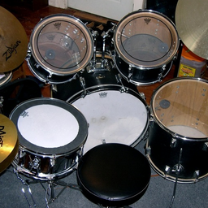
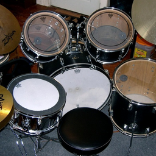
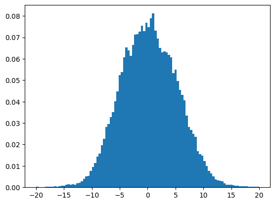

import torch
import warnings
import torch.nn.functional as F
import numpy as np
import io
from datasets import load_dataset
from IPython.display import display, Image, update_display, HTML
from torchvision.transforms import ToPILImage, RandomCrop, PILToTensor
from fastprogress.fastprogress import master_bar, progress_bar
from walloc import walloc
device = "cuda"
train_dataset = load_dataset("danjacobellis/LSDIR_540", split="train")
valid_dataset = load_dataset("danjacobellis/imagenet_hq", split="validation")
def collate_fn(batch):
return torch.cat([
PILToTensor()(RandomCrop(256)(sample['image'])).unsqueeze(0) for sample in batch
])
dataloader_valid = torch.utils.data.DataLoader(
valid_dataset.select([1,7,30,33]),
batch_size=4,
num_workers=12,
drop_last=True,
shuffle=False,
collate_fn=collate_fn
)
valid_batch = next(iter(dataloader_valid))
valid_batch = valid_batch/255
valid_batch = valid_batch - 0.5
valid_batch = valid_batch.to(device)
for img in valid_batch:
display(ToPILImage()(img+0.5))
 

class Config: pass
config = Config()
config.batch_size = 64
config.num_workers = 12
config.grad_accum_steps = 1
config.plot_update = 128
config.patience = 64
config.min_lr = 1e-7
config.max_lr = 3e-5
config.warmup_steps = 50000
config.weight_decay = 0.
config.epochs = 150
config.ϕ = 0.
config.channels=3
config.J = 3
config.Ne = None
config.Nd = 768
config.latent_dim = 16
config.latent_bits = 8
config.lightweight_encode = True
codec = walloc.Codec2D(
channels=config.channels,
J=config.J,
Ne=config.Ne,
Nd=config.Nd,
latent_dim=config.latent_dim,
latent_bits=config.latent_bits,
lightweight_encode=config.lightweight_encode
).to(device)
optimizer = torch.optim.AdamW(
params=codec.parameters(),
weight_decay=0.0,
lr = config.min_lr
)
sum(p.numel() for p in codec.parameters())/1e6
56.914384
def minus_cosine_warmup(i_step):
scale = 0.5 * (np.log10(config.max_lr) - np.log10(config.min_lr))
angle = np.pi * i_step / (config.warmup_steps//config.plot_update)
log_lr = np.log10(config.min_lr) + scale * (1 - np.cos(angle))
lr = 10 ** log_lr
return lr/config.min_lr
warmup = torch.optim.lr_scheduler.LambdaLR(
optimizer,
lr_lambda = lambda i_step: minus_cosine_warmup(i_step)
)
reduce_plateau = torch.optim.lr_scheduler.ReduceLROnPlateau(
optimizer,
factor=0.98,
patience=config.patience,
threshold=1e-5,
min_lr=config.min_lr
)
warnings.filterwarnings("ignore", message="Truncated File Read", category=UserWarning, module="PIL.TiffImagePlugin")
dist_losses, rate_losses = [], []
learning_rates = [optimizer.param_groups[0]['lr']]
img_displays = []
text_display = None
codec.train()
optimizer.zero_grad()
mb = master_bar(range(config.epochs))
mb.names = ['Distortion Loss', 'Smoothed']
i_step = 0
for i_epoch in mb:
dataloader = torch.utils.data.DataLoader(
train_dataset,
batch_size=config.batch_size,
num_workers=config.num_workers,
drop_last=True,
shuffle=True,
collate_fn=collate_fn
)
for i, batch in enumerate(progress_bar(dataloader, parent=mb)):
x = batch.to(device)
x = x.to(torch.float)
x = x/255
x = x-0.5
_, mse_loss, tf_loss = codec(x)
dist_loss = mse_loss + config.ϕ*tf_loss
dist_losses.append(np.log10(dist_loss.item()))
loss = dist_loss
loss.backward()
if (i + 1) % config.grad_accum_steps == 0:
optimizer.step()
optimizer.zero_grad()
# plotting and lr scheduler
if len(dist_losses) % config.plot_update == 0:
plot_n = len(dist_losses) // config.plot_update
smoothed_x = (0.5+torch.arange(plot_n)) * config.plot_update
smoothed_y = torch.tensor(dist_losses).reshape(plot_n, -1).mean(dim=1)
dist_x = range(len(dist_losses))
dist_y = dist_losses
mb.update_graph([[dist_x, dist_y],[smoothed_x, smoothed_y]])
mb.child.comment = f'loss {smoothed_y[-1]:.4g}; lr {learning_rates[-1]:.4g}'
# lr scheduler
if i_step < config.warmup_steps:
warmup.step()
else:
reduce_plateau.step(smoothed_y[-1])
learning_rates.append(optimizer.param_groups[0]['lr'])
with torch.no_grad():
codec.eval()
y_valid, _, _ = codec(valid_batch)
codec.train()
for img_idx, img in enumerate(y_valid):
buffer = io.BytesIO()
ToPILImage()(img + 0.5).save(buffer, format="PNG")
# ToPILImage()(img + 0.5).save(f"video/{img_idx}_{i_epoch}_{i}.png")
buffer.seek(0)
if len(img_displays) <= img_idx:
img_displays.append(display(Image(buffer.read()), display_id=True))
else:
update_display(Image(buffer.read()), display_id=img_displays[img_idx].display_id)
i_step+=1
torch.save({
'model_state_dict': codec.state_dict(),
'i_epoch': i_epoch,
'learning_rates': learning_rates,
'dist_losses': dist_losses,
'config': config
}, f"log_{device}.pth")
/home/dgj335/.local/lib/python3.10/site-packages/torch/nn/modules/conv.py:456: UserWarning: Attempt to open cnn_infer failed: handle=0 error: libcudnn_cnn_infer.so.8: cannot open shared object file: No such file or directory (Triggered internally at ../aten/src/ATen/native/cudnn/Conv_v8.cpp:78.)
return F.conv2d(input, weight, bias, self.stride,
from IPython.display import display, Image, update_display, HTML
import matplotlib.pyplot as plt
display(HTML(mb.main_bar.progress))
display(HTML(mb.child.progress))
100.00% [150/150 21:42:48<00:00]
100.00% [1327/1327 08:40<00:00 loss -2.758; lr 2.881e-05]
torch.save({
'model_state_dict': codec.state_dict(),
'i_epoch': i_epoch,
'learning_rates': learning_rates,
'dist_losses': dist_losses,
'config': config
}, "../../hf/walloc/RGB_Li_16c_J3_nf8_v1.0.2.pth")
codec.eval()
with torch.no_grad():
y_valid, _, _ = codec(valid_batch)
for img_idx, img in enumerate(y_valid):
display(ToPILImage()(img + 0.5))
with torch.no_grad():
X = codec.wavelet_analysis(valid_batch,codec.J)
Z = codec.encoder[:1](X)
Z2 = codec.encoder(X)
import zlib
bytes = Z.round().to(torch.int8).detach().cpu().numpy().tobytes()
print(valid_batch.numel()/len(bytes))
print(valid_batch.numel()/len(zlib.compress(bytes,level=9)))
12.0
21.569128658018155
plt.hist(Z.to("cpu").flatten().numpy(), density=True,range=(-20,20),bins=100);

plt.hist(Z2.to("cpu").round().flatten().numpy(), density=True,range=(-31.5,31.5), bins=63, width=1.);